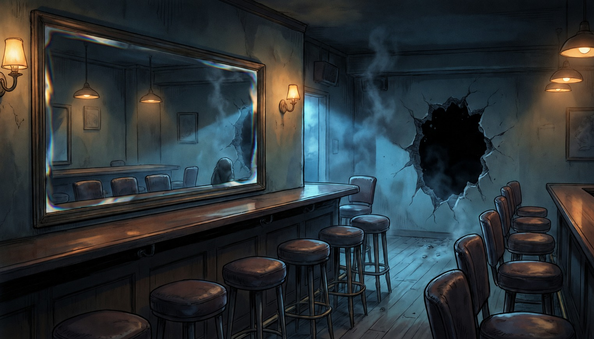

／
默认连接云端树洞：进页自动接入公开服务，纸条默认按「公开投递」送出，正文、署名、心情和回复对其他访客可见；可在下方把可见范围切回「仅本机」，只保存在这台设备。本地角色回声为预设内容，非真人回复。
既定ではクラウドのツリーホールに接続し、投稿は公開されます。内容・署名・返信は他の訪問者に見えます。下の選択で「この端末のみ」に切り替えられます。定型文は実在の人の返信ではありません。
取消只丢弃本机待发送记录，不会撤销服务器已收到的操作。 / 送信済みの操作は取り消せません。